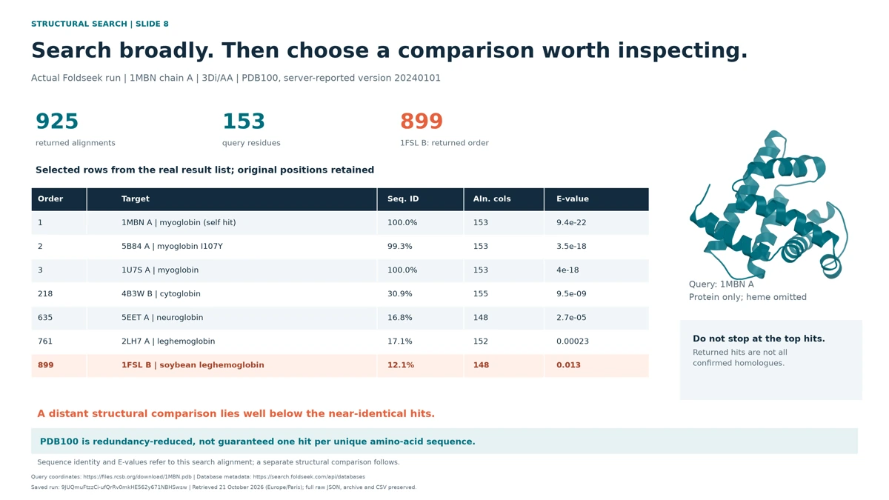
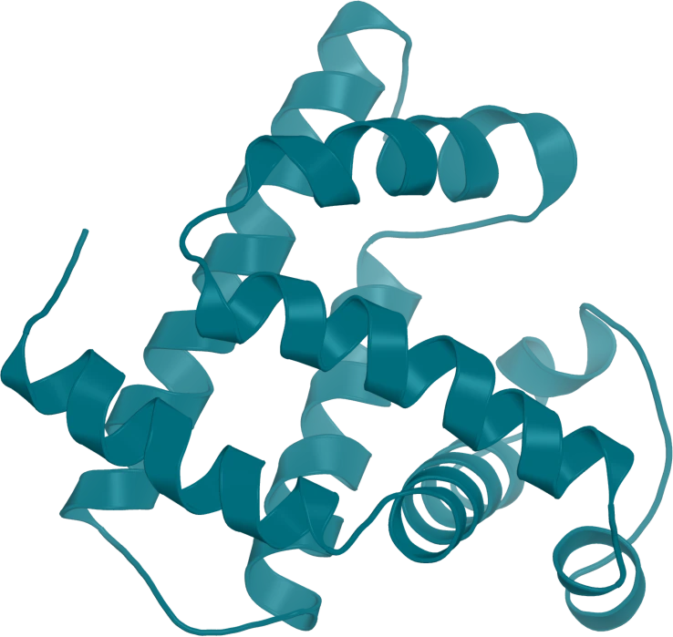

Lecture / PDF

The structural evidence workflow
Sequence information, model assessment, structural search, complexes, ensembles and design.
View the lectureGraduate class · CIBB 2026
From sequences to structural hypotheses. A modern, evidence-led view of protein models, molecular interactions and the experiments that follow.
Experimental reference / myoglobin

Follow the lecture, keep an evidence record, and get your molecular workspace ready.
Lecture / PDF

Sequence information, model assessment, structural search, complexes, ensembles and design.
View the lectureA lecture companion with key distinctions, primary links and a downloadable notes template.
Use Paulo Martel's symmetry-aware ligand comparison and structural-difference tools.
Official entry points for the tools used in the class, with access and interpretation notes.